Filtering in PRMan
Brent Burley, Feb 2007
The following are some very interesting insights on filtering in PRMan, by Brent. Keep in mind that Brent is not representing or speaking for Disney or Pixar. These are purely his insights as he tried to understand how filtering works in PRMan. And I thought it would be something really cool to share with the RenderMan community. I do want to thank Disney for letting us share this.-- Tal Jul 24, 2008
Here are some typical default filtering settings for PRMan:
|
ShadingRate
|
PixelSamples
|
ShadingInterpolation |
PixelFilter
|
PRMan
|
1.0
|
2 2
|
"constant" |
"gaussian" 2.0 2.0 |
MTOR
|
1.0
|
2 2
|
"smooth" |
"box" 1.0 1.0 |
"TOR.ini"
|
5.0
|
3 3
|
"smooth" |
"separable-catmull-rom" 2.0 2.0 |
Lumiere
|
1.0
|
5 5
|
"smooth" |
"catmull-rom" 2.0 2.0 |
| Shot Finaling CHIC |
0.5 |
8 8 |
"smooth" |
"catmull-rom" 2.0 2.0 |
Shot Finaling WILB
|
0.5
|
8 8
|
"smooth" |
"mitchell" 5.0 5.0 |
How do these settings affect the filtering, and what are the optimal
settings?
- Optimal filtering = best balance between aliasing and detail loss
(cost is a secondary concern) - "best" in this case is somewhat
subjective, but there's definitely a sweet spot.
- Aliasing = high frequency data masquerading as low-frequency data
(jaggies, Moiré, noise, sparkling, popping, etc.) that results
from sampling a signal with improper filtering. And since the
aliasing is mixed in with the real low-frequency data, once added it
cannot be removed.
PRMan filtering occurs in several stages:
- Dicing of geometry into micropolygons whose size is based on the ShadingRate
- Shading, which includes texture
and/or procedural filtering
- Stochastic sampling, with a resolution based on PixelSamples, and micropolygon sample values
determined by ShadingInterpolation
- Final image reconstruction using the PixelFilter
Each step
attenuates high-frequencies to some extent and also adds some
aliasing. First, the FFT
is reviewed as a tool for frequency analysis, and then
the frequency response of each of the filter settings is analyzed in
the
follow sections. Finally, filtered sample
images are compared and recommendations
are summarized.
Frequency
Analysis with FFT
The frequency content, or spectrum, of a signal can be measured
using the Fast
Fourier Transform
(FFT) in 1 or 2 dimensions. To measure the frequency response of
a filter, a random (white noise) signal is generated, processed by the
filter in question, and
then analyzed with the FFT to measure the spectrum after filtering.
Sample 1d FFT:
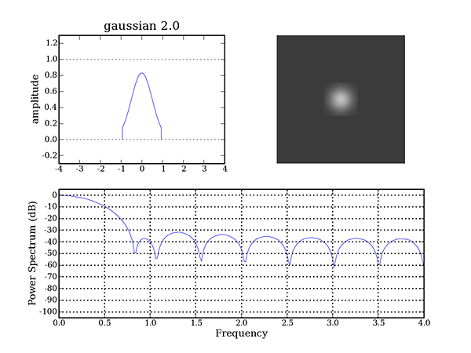
Top left: 1d kernel plot; top right: 2d kernel image. Bottom: FFT
frequency response.
The FFT response curve shows the attenuation based on frequency.
The attenuation is in decibels (dB) and is a logarithmic scale.
Every 6 dB down from zero corresponds to a reduction in intensity by
1/2, or 1 bit of resolution. For example, in an 8-bit image,
after 48 dB the
intensity is no longer measurable; 16 bit resolution gives 96 dB
dynamic range. The filter shown above may be sufficient for 8-bit
images but will produce significant aliasing in a 16-bit image.
The frequency for an image filter is measured in cycles per
pixel. The frequency of 0.5
is the Nyquist limit and is the highest representable frequency
corresponding to a signal with a 2-pixel period (e.g. alternating
bright/dark pixels).
Everything above that frequency that gets through the filter is
by definition aliasing. Any attenuation below the Nyquist limit
is lost detail
and results in a blurry image. The gaussian 2.0 filter shown
above has an attenuation of about 10dB (or 70%) at the Nyquist limit
but also loses about 2.5dB of detail (or 25%) in the 0.25 frequency
range.
For separable filters (like mitchell and separable-catmull-rom), the 1d
frequency response also applies to 2d
filtering. But for non-separable filters (like gaussian and
catmull-rom), and other filtering effects
like
stochastic sampling and shading interpolation, the frequency response
must be examined using a
2d FFT.
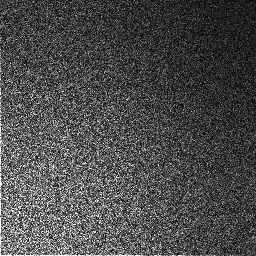
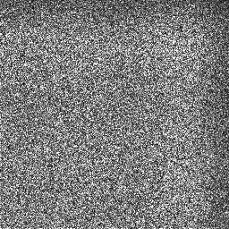
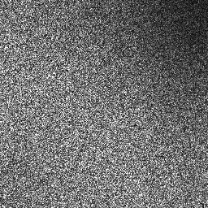 
Left to Right: 2d FFTs of gaussian 2.0, sinc 7.0, catmull-rom 4.0, and
separable-catmull-rom 4.0 filters.
The 2d FFT shows the frequency response of a filtered rand image.
The lower left corner of the image represents
frequency zero in x and y, and the upper right corner is the Nyquist
limit (the lower right and upper left corners
are the 1d Nyquist limits in x and y). Low pass filters attenuate
the
higher frequencies
and thus the image is typically darker on the top and right
edges. The sinc
response is much flatter than the gaussian with negligible attenuation
below the nyquist limit. For the gaussian, the intensity in the
lower right corner is approximately 70% lower than at the lower left
corner (which is consistent with the 1d FFT); for a separable filter,
the attenuation in the upper right corner will be the product of the x
and y attenuations which for the gaussian is about 90% (.3 * .3 =
.09 = 91% attenuation). Notice how the catmull-rom and
separable-catmull-rom have significantly different 2d responses even
though their 1d response is identical.
Various 2d images and their FFTs (inset over the images) are found
here.
ShadingRate
The ShadingRate determines the size of the micropolygons and
represents the desired area
of the micropolygons in pixel units. The length of a micropolygon
on each side is equal to sqrt(ShadingRate).
For example, a ShadingRate of 0.25 generates micropolygons that are 1/2
a pixel wide
on each side.
Using a ShadingRate of less than 1.0 results in subpixel shading and
gives a more detailed image, but at significant cost: the shading time
(which is often most of the rendering time) is roughly proportional to
1.0/ShadingRate. For
example, a shading rate of 0.25 incurs a shading time 4 times
longer than a ShadingRate of 1.0; the effect on overall render time
depends on other factors but will likely be somewhat less than 4 times.
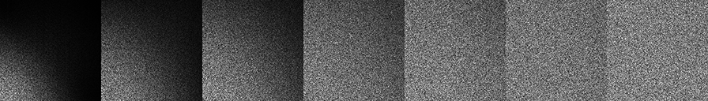
Left to right: 2d FFT for shading rates of 4, 2, 1, 0.5, 0.25,
.125, and 0.0625 (with smooth shading interpolation).
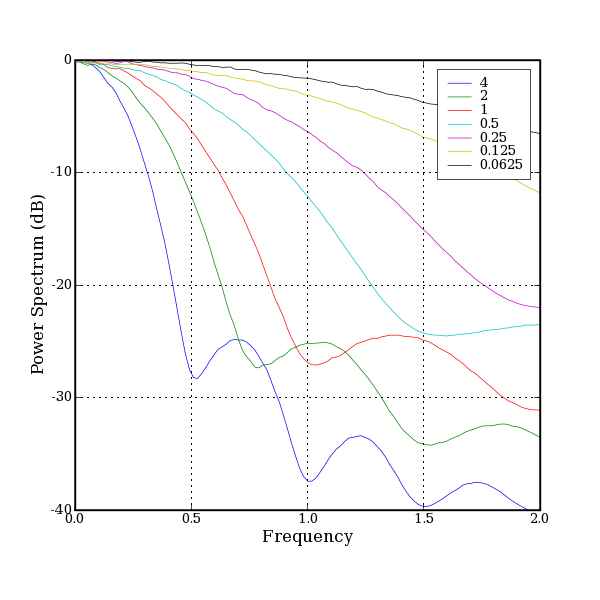
1d FFT for various shading rates.
With a shading rate of 0.5, there is still significant attenuation
(about -3dB, or 50%) at the Nyquist limit. It is recommended to
use a shading rate of 0.25 or smaller to minimize detail loss.
Texture
Filtering
There are a number of texture filters available:
box
|
aliases too much
|
disk
|
supposed to avoid mipmap
artifacts, but expensive and also aliases too much
|
gaussian
|
best filter for color, not
smooth enough for displacements
|
radial-bspline
|
best filter for displacements,
too blurry for color
|
lagrangian
|
supposed to be 4x faster, but
has strange artifacts
|
Prman texture filtering is anisotropic,
but only in a rectangular
way. That is, you can scale the filter rectangle separately in s
and t, but the filter area must remain a rectangle. When the
texture coordinates don't form a rectangle (i.e. when the shading grid
and texture axes are not aligned) the filter rectangle is formed from
the bounding box of the coordinates which which results in overly soft
filtering. Fully anisotropic
filtering (using "elliptical weighted averaging") is reported to be in
development but
is not yet available. But even when it is, it will still likely
be
somewhat soft as elliptical filtering is typcially based on the
gaussian filter which is a soft filter.
Our [Disney's] proprietary texture system, Ptex, uses the Mitchell filter with controllable sharpness. Smooth filtering (sharpness=0) is equivalent to bspline filtering and is good for displacements, and sharp filtering (sharpness=1) is good for color. Values in-between are also possible (0.4 is similar to gaussian). Because the per-face UVs are always grid-aligned, the filter area will always be a rectangle and proper anisotropic filtering will be achieved. A paper on Ptex was published in the 2008 Eurographics. Go here to find out more about this texture format and to request a copy of the paper.
Procedural
Filtering
Anti-aliasing of a procedural-noise-based shader generally involves
attenuating
noise octaves based on the filter size. An optimally attenuated
noise function is now available with the "wnoise"
shadeop. However, one problem that remains is that the filtering
is
isotropic. On silhouettes where one
dimension should be
filtered more than the other, both dimensions must be filtered equally
and thus too much detail is lost. Baking
a procedural noise pattern into a texture (at a slightly higher res
than needed) will then enable
anisotropic filtering and generally produce a more detailed result.
PixelSamples
The PixelSamples setting controls the number of times the micropolygons
are
sampled
for each pixel. Prman generates a "subpixel" image that is
PixelSamples
times larger and then uses a 2d "pixel filter" to reduce the image
to the final resolution.
E.g.
PixelSamples 5 5
Format 2048 1280
Prman renders a 10240 by 6400 image and then reduces
it
to 2048 x 1280 using the PixelFilter
A special mode can be used to turn off the pixel filtering
(Hider "hidden" "subpixel" [1.0]) and render the subpixel image.
This can be useful for
debugging or
for filtering in another package like Shake.

Left: subpixel (PixelSamples 5 5) render, Right: final render after
filtered reduction
Notice the noisy edges in the above image, particularly on geometric
silhouettes. This is due to stochastic
sampling which jitters the micropolygon sample locations to help
anti-alias sharp edges. The amount of noise is reduced as the
number of pixel samples is increased.
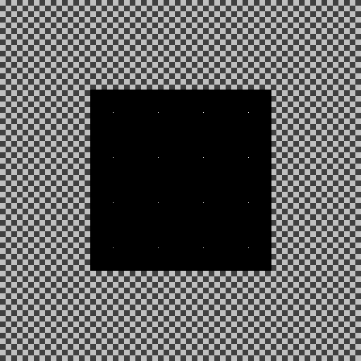
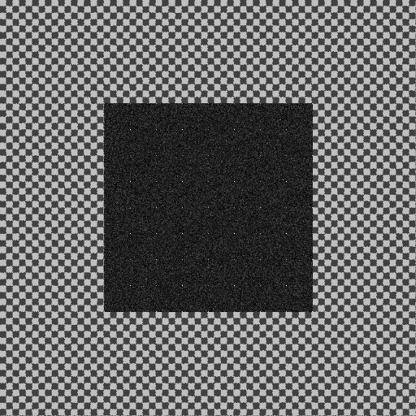
An 8x8 checker pattern with its 2d FFT inset. All of the energy
is concentrated in the fundamental frequency of 1/16 and the odd
harmonics (3/16, 5/16, 7/16). On the right, the checker pattern
was
stochastically sampled. The even harmonics are slightly
emphasized, but otherwise the main effect is the addition of white
noise with a strength of about 20%. Doubling the pixel samples
appears to
cut the strength of the noise in half. Note that the 20% noise
level is particular to the frequency content of this image, but is
fairly typical.
In addition to scaling the resolution of the subpixel image,
PixelSamples also determines the number of filter kernel samples as
shown in the figures below.

Notes:
- A low number of samples will distort the kernel and the
frequency response. For example, the 2 unit gaussian and
catmull-rom filters with 2 pixel samples (shown above) are both
identical to a triangle filter which generally has poor performance.
- The kernel values must be normalized - that is, all of the
samples must add up to 1.0. Because of this, the samples may not
follow the original curve exactly. For example, the center sample
for the gaussian filter with an odd number of samples is visibly lower
than the calculated value.
- Using an odd PixelSamples value will sample the kernel at the
pixel centers (integer positions -2, -1, 0, 1, 2, etc.). For many
kernels (catmull-rom, sinc, mitchell, lanczos), the kernel is zero at
these
points, so many of the samples are wasted and the filter performance
will be degraded. Note in particular
that the catmull-rom 4.0 filter with 1 pixel sample has 5 kernel points
but four of them are zero - this is equivalent to a 1 unit box filter!
At a bare minimum, PixelSamples should be at least high enough to
sample each micropolygon twice in each direction (sampling only once
per polygon defeats the purpose of smooth shading and adds a lot of
noise to the image). The minimum reasonable value is thus 2 /
sqrt(ShadingRate) and is shown in the table below.
Increasing
PixelSamples further doesn't affect shading cost, but does become
expensive at
very high levels (20 or more). More PixelSamples will generally
look better (with less noise), but have negligible effect on beyond a
certain point (given by the Recommended PixelSamples values
below). Note
that more samples may be needed for other reasons such as motion blur.
Recommended PixelSample Values
Shading Rate
|
Min PixelSamples for Shading Rate
|
Recommended PixelSamples for
Shading Rate
|
1.0
|
2 2
|
4 4
|
0.5
|
4 4*
|
6 6
|
0.25
|
4 4
|
8 8
|
0.1
|
6 6
|
10 10
|
* 3 3 would normally be sufficient,
but using an odd number of samples is not recommended for some filters
as previously discussed
A comparison of frequency response vs pixel samples (using mitchell 4.0
filter) is shown here. For each shading rate, increasing
the number of pixel samples beyond a certain point has no visible
effect.
ShadingInterpolation
ShadingInterpolation has two options:
"constant" - micropolygons are flat
shaded
"smooth" - micropolygons are smooth shaded (aka "Gouraud" shading or
bi-linear interpolation)
8x8 pixel samples with randomly
colored, pixel-sized micropolygons rendered as subpixel image:
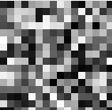
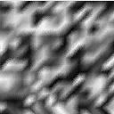
Constant Shading Smooth Shading
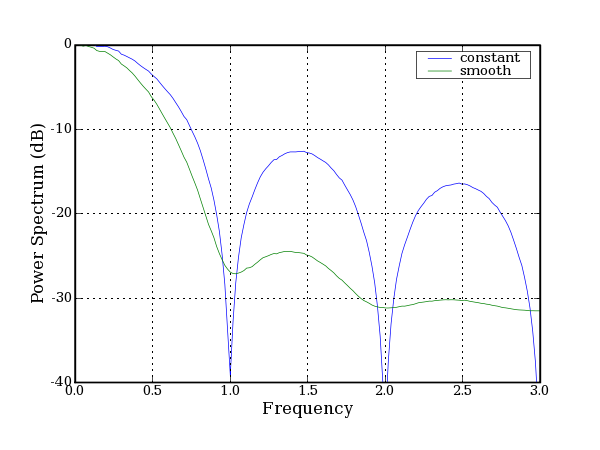
Frequency response vs ShadingInterpolation, using a ShadingRate of 1.0.
Constant shading is like "box" filtering and is sharper than smooth
shading, but has
significant aliasing. Smooth shading is like "triangle"
filtering.
Note that smooth shading is required to avoid certain artifacts),
particularly
with
displacements, so it's not really a choice (see "centered derivatives"
discussion in prman docs); but the shading interpolation affects the
overall
frequency response and thus must be taken into account.
PixelFilter
There is a wide choice of pixel filters, each with a characteristic
kernel
shape and a settable
kernel width. Unfortunately, there seems to be no good published
advice for
choosing
a filter kernel or setting the appropriate width.
What's more, you
can't compare filters by setting their kernel widths to be equal; for a
fair comparison, you must know the optimal kernel width for each filter
and that information is not easily obtainable (and is certainly not in
the prman docs)! For the filters shown below, the "canonical"
widths were gathered from a number of sources including original
research papers, by comparing with Shake (where possible), and by
examining the FFTs. The blackman-harris filter's 3.3 width in
particular was determined by matching the frequency response to the
gaussian.
Here are all the PRMan filter kernel profiles (with canonical widths):
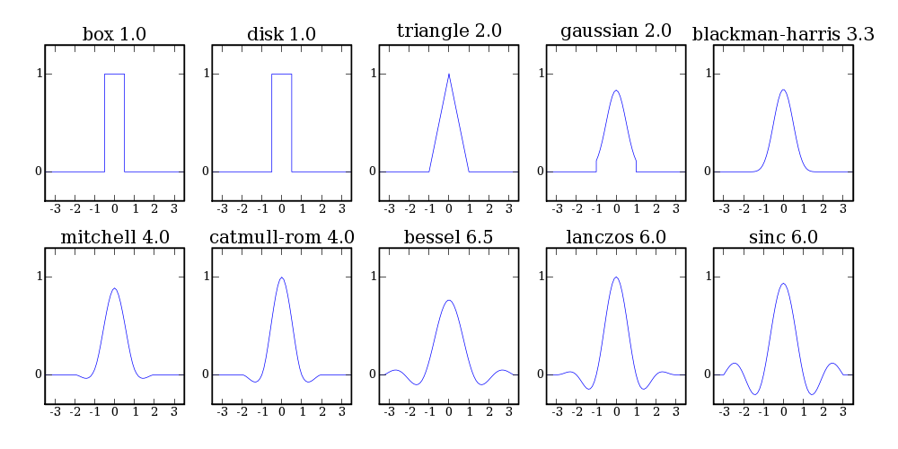
The top row of filters approximate the infinite gaussian function,
exp(-w * x^2). The box filter just averages all values within the
box. If you apply a 1 unit wide box filter twice, you get a 2
unit triangle, also known as a linear b-spline;
three times, a 3 unit quadratic b-spline; four times, a 4 unit cubic
b-spline; and so
on; at the limit you'll have the infinite gaussian (which is infinitely
smooth). But in a practical implementation, the gaussian function
must
be windowed. PRMan's "gaussian" filter uses a box window which
adds
aliasing similar to a box filter (but attenuated). A wider window
would reduce the aliasing, but the
window width is not settable in PRMan. The blackman-harris filter
has a gaussian-like kernel that goes smoothly to zero at the edges and
has
much less aliasing; it is built from
cosines, a0 + a1 * cos(pi*x) + a2 * cos(2*pi*x) + a3 * cos(3*pi*x),
where a0..a3 are carefully chosen constants. The lower order
gaussian-like filters (like box and triangle) are much sharper, but
have strong aliasing.
The bottom row of filters approximate the infinite sinc function,
sin(x)/x, with alternating (and progressively smaller) positive and
negative lobes. The filters are shown left to right in order of
increasing sharpness (which is relative to the size of the negative
lobes). Mitchell and catmull-rom are cubic filters with single,
negative side lobes. The lanczos filter
(named after a Hungarian mathmetician and pronounced "LAHN-tsosh") is a
smoothly windowed sinc with very good performance. The bessel
filter is another variant of sinc that is softer than lanczos
due to the wider lobes and lower middle peak. Beware of a bug in
bessel with odd filter widths - the sample at 0.0 is too low (at least
in the PRMan 13.0). The sinc filter is just the straight sinc
function windowed with a box and thus will
have significant aliasing for smaller widths.
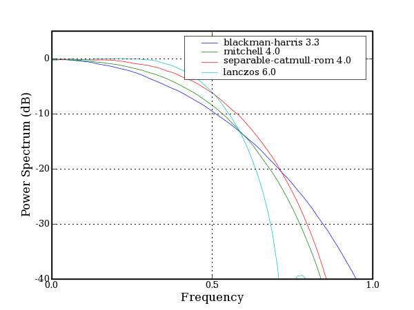
Frequency response of the recommended filters, in order of increasing
sharpness.
Negative lobes and ringing. The
infinite sinc is theoretically the ideal filter, perfectly
reconstructing sampled periodic
signals below the Nyquist
limit, and perfectly suppressing higher frequencies and the sinc-like
filters do preserve the most detail. But for
non-periodic signals (like the step that occurs at the edge of an
object) this results in ringing
due to the oscillating
lobes. With one negative lobe such as with mitchell or
catmull-rom, the ringing is confined to a single band that merely
increases the contrast at the edge. With an additional positive
lobe (as shown in the bessel, lanczos, and sinc filters above) there
will
be two rings - one dark and one light - creating a halo effect.
Filters will more lobes will have more rings that look like pond
ripples. For this reason,
only filters with a single negative side lobe and no additional lobes
are recommended. This means confining lanczos and sinc to widths
of 4.
Radial vs. separable filters. The
disk, gaussian, and catmull-rom filters are radial which means that the
1d filter kernel is revolved to produce a radially-symmetric 2d
kernel. The rest
of the filters are separable which means that the 1d kernels are
computed separately in x and y and then multipled together to produce
the 2d kernel. The "separable-catmull-rom" filter has a 1d kernel
that is identical to the radial "catmull-rom", but is extended to 2d
rectangularly as shown below. Note how the negative lobes cancel
out on the diagonal for the separable-catmull-rom but form a symmetric
"moat" around the radial catmull-rom.

Radial filters are theoretically better at suppressing sampling grid
structure. But, the disk filter has too much aliasing to be
useful; the gaussian filter is windowed with a box and thus behaves
more like a separable filter than a radial one; and the radial
catmull-rom filter is much
sharper than the 1d and
separable forms due to the enlarged negative region and the
higher-than-one central peak resulting from normalization.
Ironically, blackman-harris, the apparently best-performing radial
filter isn't actually radial! This doesn't prove that radial
filters are bad, just that they don't behave as expected from the 1d
analysis.
Separable
2d filters on the other hand perform equivalently to their 1d
counterparts. Note that all of the Shake filters are separable
and this apparently has not been an issue.
Filter width. All filters
have a width parameter (actually there are separate "xwidth" and
"ywidth" parameters though the 2 values are generally the same).
But the behavior of the width parameters varies from filter to
filter. For the box,
disk, triangle, gaussian, blackman-harris, and mitchell filters, the
width parameter controls the kernel width. The kernel is simply
scaled spatially, and the frequency response is similarly scaled.
Put
another way, this is like controlling the blur width in Shake.
For these filters, there are canonical widths that put the cutoff
frequency near the Nyquist limit. These are the widths shown in
the profiles above. The Blackman-Harris filter doesn't have a
published canonical width that I could find, but I found that the 3.3
value closely matches the frequency response of PRMan's Gaussian 2.0
filter. The canonical widths should be considered minimum
widths. Larger widths can be used to reduce aliasing. But
to avoid a result that is too blurry, the width should probably not be
scaled much beyond about 25% larger than the canonical width.
For the remaining filters (catmull-rom, separable-catmull-rom, bessel,
lanczos,
and sinc), the width parameter controls the kernel window width and thus controls the
number (and in some cases the strength) of the side lobes. The
frequency response however is fixed, and wider kernels just increase
the
sharpness of the image. Also note that both forms of the
catmull-rom filter have a kernel that goes to zero beyond a width of 4
and thus
values larger than 4 have no effect (other than increasing the cpu
time). Also note that the kernel window is applied as a
rectangle, so even though a "catmull-rom 2.0" kernel will have no
negative lobes in 1d, it will have partial negative lobes on the
diagonal in 2d. The "separable-catmull-rom 2.0" filter will have
no negative lobes in 1d or 2d (but clipping the kernel like this will
add significant
aliasing and is not recommended). With these filters, going below
4 is not recommended
due to the increased aliasing, and going above 6 is not recommended due
to the excessive ringing as previously discussed.
Kernel plots and 1d FFT images for all of the prman filters over a
range of widths are shown
here)
2d FFT images of the filters with three different shading rates
(1.0, 0.5, and 0.25) and using 8x8 pixel samples and smooth shading are
shown in:
fft2d_1.0
fft2d)_0.5
fft2d_0.25
Based on these tests, I would recommended the following filters and
filter widths:
|
|
Minimum Width
|
Maximum Recommended Width
|
| softest |
blackman-harris
|
3.3
|
4.0
|
.
|
mitchell |
4.0 |
5.0 |
.
|
separable-catmull-rom |
4.0 |
4.0 |
| sharpest |
lanczos
|
4.0 |
6.0 (be careful of ringing!)
|
For the first three, larger widths will be softer, but will produce
less
aliasing.
For lanczos, larger widths will be sharper, but with
increased ringing.
Shake filters. The
primary Shake filters all have PRMan equivalents:
|
Shake Filter |
PRMan Filter
|
| softest |
gauss |
gaussian 2.0, blackman-harris 3.3
|
.
|
mitchell (default enlargement
filter) |
mitchell 4.0
|
.
|
lanczos |
lanczos 6.0
|
| sharpest |
sinc (default reduction filter) |
sinc 4.0
|
Shake also has box and triangle filters, but because of the way shake
pre-filters the image, these are not equivalent to the prman versions.
Adjustable Mitchell filter.
The Mitchell filter is really a family of
filters that includes Catmull-Rom, the cubic b-spline, and everything
in between. Mitchell can even go sharper than Catmull-Rom.
The sharpness parameter is not controllable in
PRMan, but it can be easily implemented as a Rif plugin.
Here are are kernel plots and frequency responses for the mitchell 4.0
filter with a sharpness values ranging from 0.0 to 1.8:
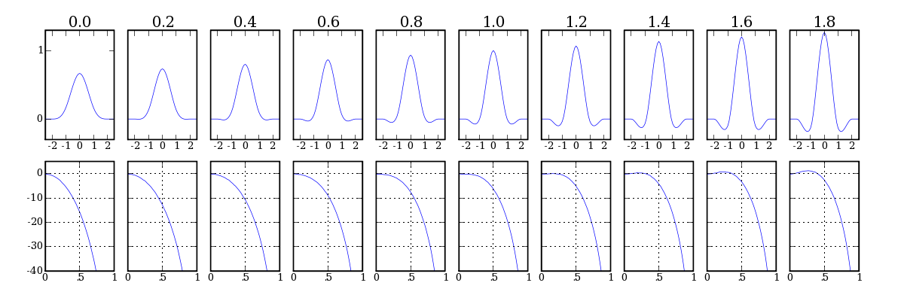
The response is flattest at a sharpness of 1.2 and is still pretty flat
up to about 1.5. Values above 1.5 should probably be avoided.
The mitchell filter can provide sharpness that is comparable to most of
the builtin filters:
PRMan filter
|
comparable sharpness
for mitchell 4.0 filter
|
comments
|
(b-spline)
|
0.0
|
exact match
|
gaussian 2.0
blackman-harris 3.3
|
0.4
|
|
separable-catmull-rom 4.0
|
1.0
|
exact match |
lanczos 4.0
|
1.0
|
|
lanczos 5.0
|
1.25
|
larger lanczos widths have a
second positive lobe
and will exhibit halo artifacts
|
sinc 4.0
|
1.4
|
mitchell has much flatter
response! |
sinc 5.0
|
1.5
|
sinc 5.0 is much flatter than
sinc 4.0 (comparable to mitchell),
but has second positive lobe and will exhibit halo artifacts
|
Notice in the above images that as the sharpness increases, the
attenuation at the Nyquist frequency decreases (from about 10db at
sharpness 0.4 to only about 3db at sharpness 1.5). As an
alternative, a constant Nyquist attenuation can be achieved by matching
the filter width to the sharpness level as shown below. This
should give
consistent anti-aliasing for a range sharpness values, though the
sharpness of the image will be slightly reduced.
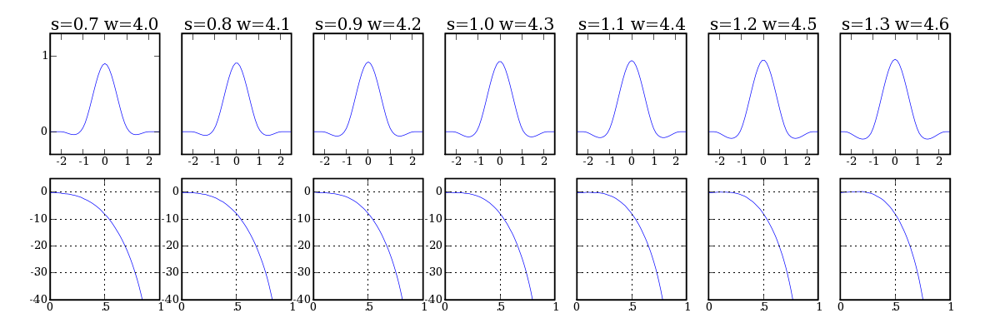
Mitchell filters with matched sharpness level and filter width.
Sharpness 0.7, 4.0 is close to the "standard" Mitchell filter.
All of these values have about an 8dB attenuation at the Nyquist
frequency.
Image
comparison
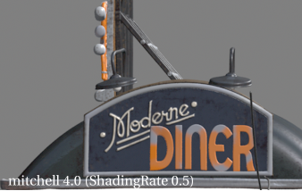 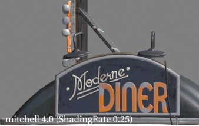
Mitchell 4.0 filter w/ a
range of ShadingRate settings (w/ standard sharpness of 0.667).
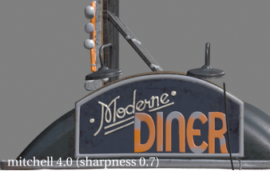 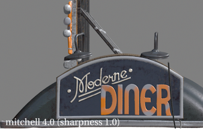
Mitchell 4.0 filter w/ a
range of sharpness settings (ShadingRate 0.25).
Additional filters are shown in diner. All images used
5x5 PixelSamples.
Summary
of Recommendations
- ShadingRate - should be
0.25 or smaller for final images. Smaller shading rates may be
needed for large displacements. Larger shading rates may be
needed if the render is too slow, but image quality will suffer.
- PixelSamples - should be
at least 8 in each direction for a shading rate of 0.25 and should
never be less than 2 /
sqrt(ShadingRate). Even numbers of samples are more
efficient for many kernels. Larger numbers of samples may be
needed for motion blur.
- ShadingInterpolation -
should be "smooth".
- PixelFilter - start with
the mitchell 4.0 filter. To soften and/or reduce aliasing, increase
the width up to 5.0
(fractions are ok!). For a
sharper filter, use a custom Mitchell with controllable
sharpness (using a RIF plugin for example); or, use one of the
recommended standard filters: separable-catmull-rom 4.0, lanczos 4.0 to
6.0.